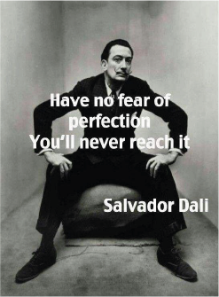
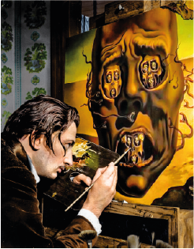
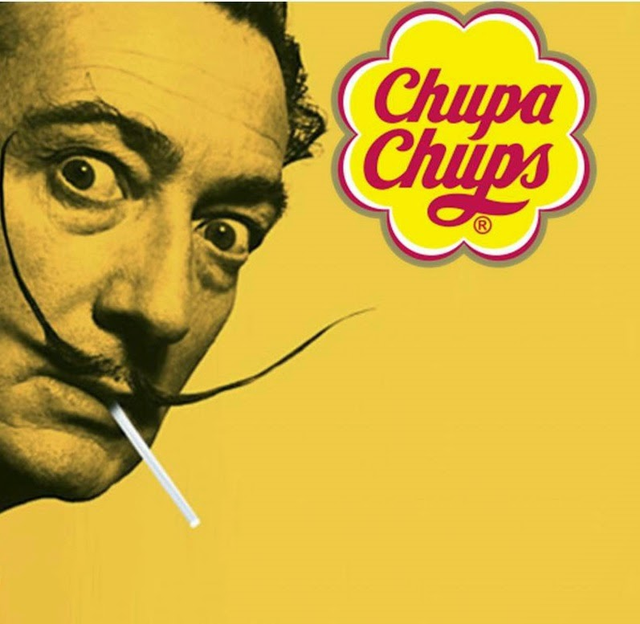

Het Begin
Dalí werd geboren in Figueres, een klein stadje aan de voet van de Pyreneeën, in Catalonië (Spanje) op 11 mei 1904. Zijn eerste tekenonderwijs kreeg Dalí op tienjarige leeftijd van een vriend van zijn vader, de impressionistische kunstschilder Ramón Pichet (1872-1925). Zijn eerste tentoonstelling vond in 1918 plaats in het stadstheater van Figueres.
Studies
Salvador Dalí studeerde in Madrid van 1921 tot 1924. In 1926 ging hij naar Parijs. Daar leerde hij Pablo Picasso en André Breton kennen. In 1929 werd hij verwelkomd door Breton en sloot hij zich aan bij het surrealisme. Hij werkte er samen met onder anderen de cineast Luis Buñuel.
Klassieke Periode
In de zomer 1940 vestigde hij zich in de Verenigde Staten na een vlucht uit Frankrijk dat door het Duitse Rijk werd bezet, waar hij 15 jaar zou wonen. In 1955 keerde hij terug naar Spanje. Deze periode staat bekend als zijn "klassieke" periode. Hierin uitte hij zijn gedachten over de wetenschappen en zijn diepe katholieke geloof. In deze tijd maakte Dalí een serie van 18 grote schilderijen. Ook maakte hij enkele kunstjuwelen.
Werk in het Buitenland
In New York bad hij in de Sint-Patrickkathedraal in de jaren 40 herhaaldelijk publiekelijk voor Franco en diens Spaanse staat. In de VS werkte Dalí jarenlang als adviseur en tekenaar voor de beroemde Walt Disney.
Dalí stond ook bekend om zijn snor, die dun en langwerpig was. Als antennes wezen beide snorpunten omhoog of waren gekruld. Dalí beweerde dat hij via zijn snorharen inspiratie uit de kosmos ontving. Zijn snor was geïnspireerd op die van een andere wereldberoemde Spaanse schilder, Diego Velázquez.
Het Chupa Chups-logo van Salvador Dali
In 1969 werd wijlen, bekende kunstenaar Salvador Dali benaderd om een nieuw logo te ontwerpen voor de Spaanse banketbakker Chupa Chups.
Het Einde
Op 23 januari 1989 overleed Dalí aan een hartstilstand in de Galatea-toren van het Dalí Theatermuseum in Figueres, waar hij de laatste jaren van zijn leven woonde. Hij werd hier begraven in een crypte onder het podium.